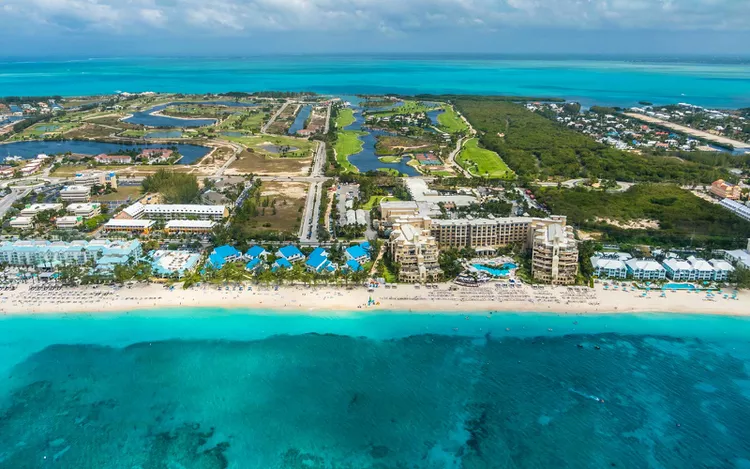
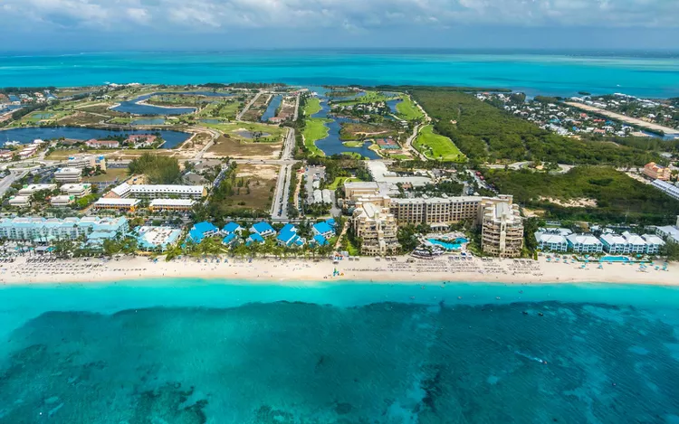
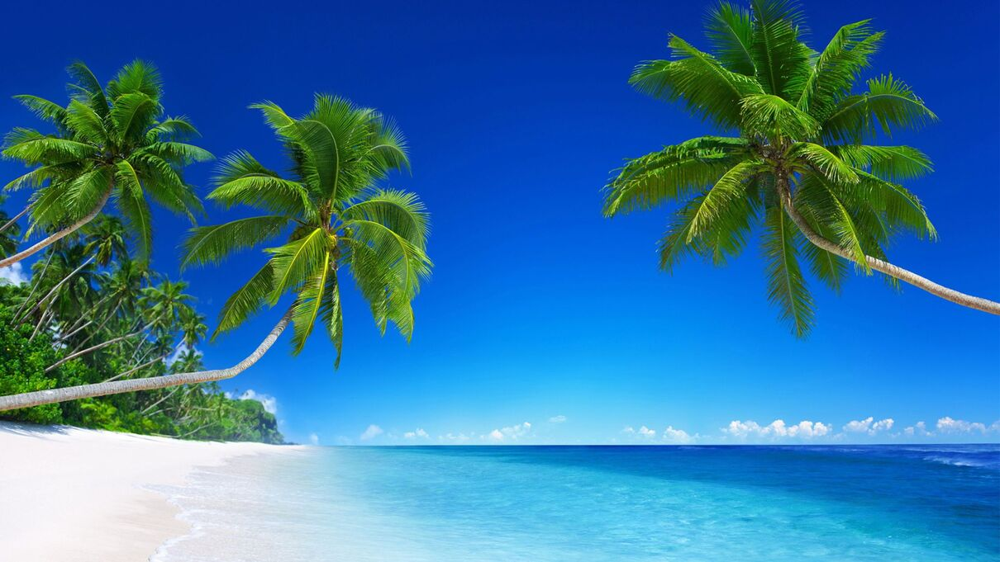
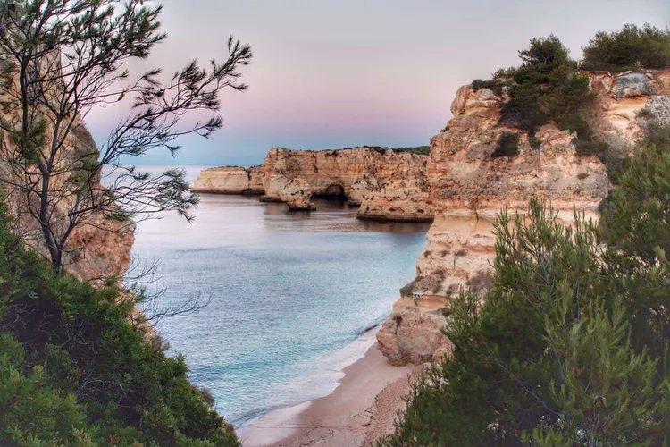
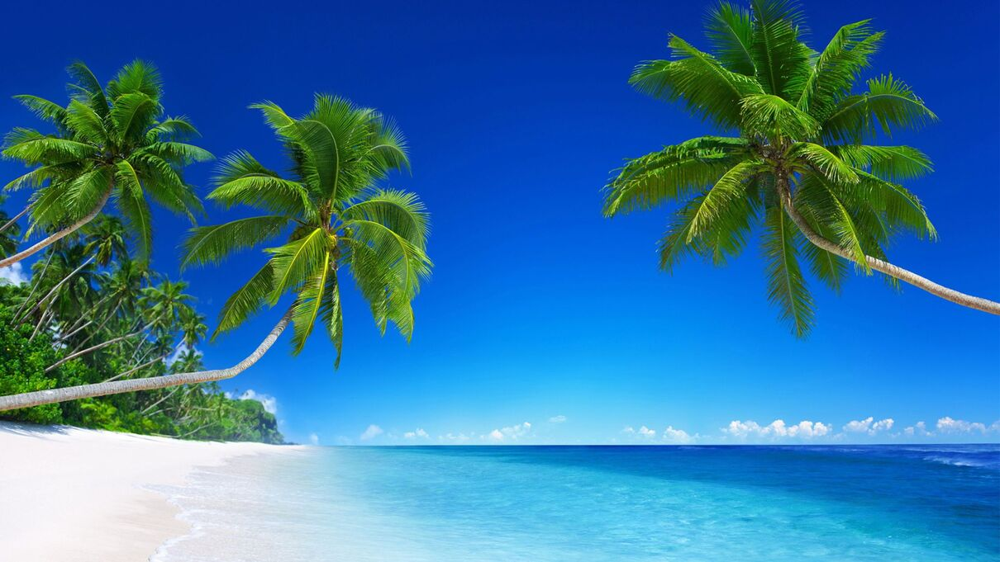
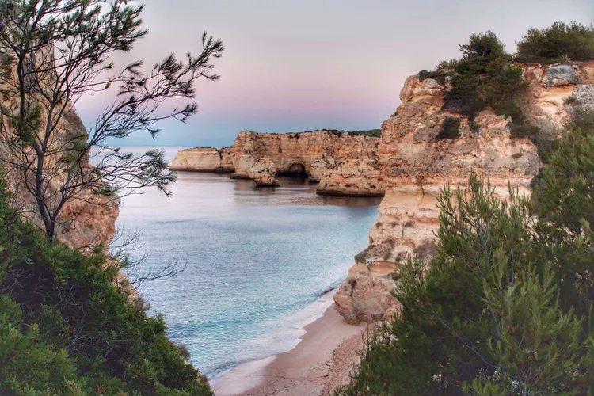
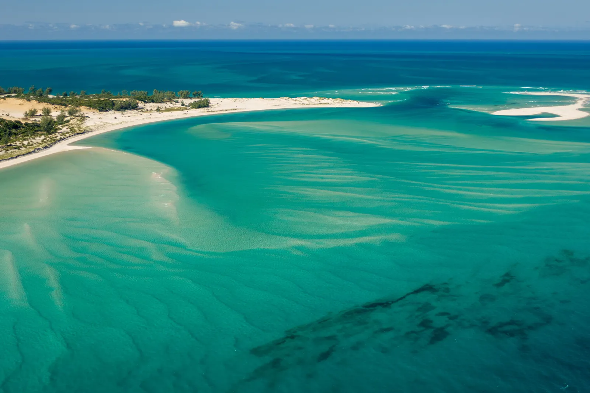
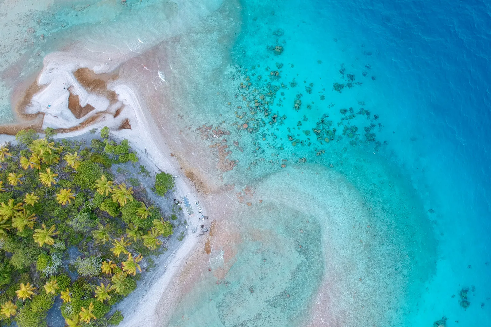
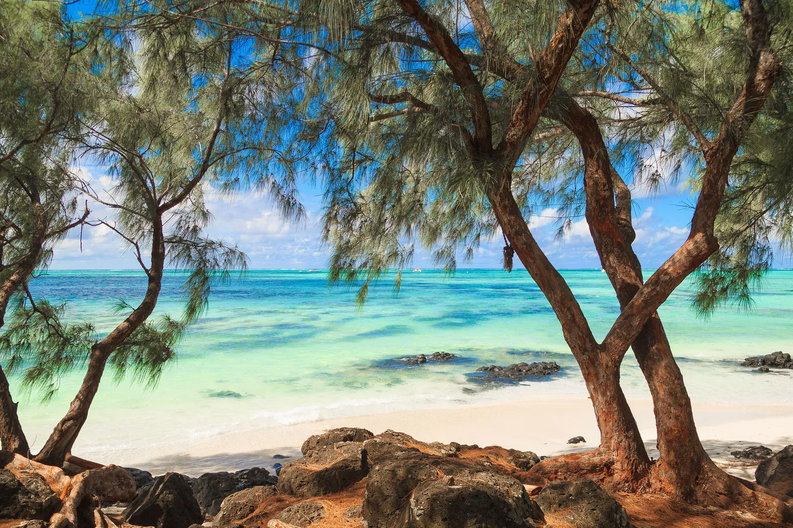

"Seychelles"
"Seychelles"
 "Abu Dhabi"

"Caymans"
"Abu Dhabi"

"Caymans"
 "Brazil"

"Malta"

"Portugal"
"Brazil"

"Malta"

"Portugal"
Benguerra Island, Mozambique
Cast away in the protected Bazaruto Archipelago off the coast of southern Mozambique, Benguerra is a place where sandbars shimmer like nacre and leggy flamingoes pick their way delicately through the channels. A short sail by dhow east of the town of Vilanculos, the fine sand here is fringed by a two-mile-long coral reef, while migrating humpbacks and huge whale sharks pass majestically further offshore. The shot-silk waters are also home to the largest dugong population in the western Indian Ocean, and inland you’ll find congregations of crocodiles and all manner of bird species.
This exclusive status ensures that the island remains a pristine sanctuary, with only a handful of carefully selected lodges dotting its picturesque landscape. Once the day-trippers depart, a sense of tranquility descends upon Benguerra Island, offering a serene haven where you can enjoy the sun-drenched beaches and crystal-clear waters in absolute solitude. The limited number of lodges on the island ensures that guests can bask in the luxury of having the beach all to themselves, creating an atmosphere of exclusivity and privacy.
Fakarava, French Polynesia
Venturing beneath the surface of Fakarava's azure waters unveils a mesmerizing world of marine biodiversity. The atoll's expansive lagoons serve as a safe haven for an array of rare fish, while fluorescent corals add a kaleidoscopic touch to the underwater landscape. One of the most thrilling aspects of Fakarava's aquatic realm is the presence of 'walls' of sharks that gracefully cruise close to the shore, creating a unique and unforgettable snorkeling experience. Brave snorkelers can witness these majestic creatures in their natural habitat, an exhilarating encounter that adds an adventurous edge to Fakarava's allure.
Beyond its vibrant marine life, Fakarava's unblemished beaches hold a historical and artistic significance. The powdery white and pink sands served as the muse for the renowned French artist Henri Matisse during his three-month sojourn in nearby Tahiti in 1930. Immersed in the enchanting beauty of the lagoons, Matisse found inspiration for his iconic 'bleu period,' captivated by the infinite shades of blue reflected in the tranquil waters. The very essence of Fakarava's beaches, with their untouched splendor and ethereal hues, is forever immortalized in Matisse's masterpieces, making them an integral part of art history.
Ile aux Cerfs, Mauritius
Bearing the name derived from the stags imported from Java for hunting, Ile aux Cerfs in Mauritius stands as a captivating destination that has, over time, become both celebrated and, to a certain extent, challenged by its own renowned beauty. This island paradise, once a well-kept secret, has drawn attention from visitors around the globe, thanks to its picturesque landscapes, inviting beaches, and the promise of an idyllic tropical escape. However, the very popularity that has propelled Ile aux Cerfs into the spotlight has also brought about challenges, such as the presence of obtrusive crowds and persistent beach touts.
It's essential to acknowledge that Ile aux Cerfs' popularity is not without merit. The island's allure lies in its postcard-perfect scenery, turquoise waters, and the overall promise of a tropical haven. From water sports enthusiasts seeking adventure to those desiring a leisurely beach day, this place caters to a variety of interests, contributing to its well-deserved reputation as a popular destination. The challenge, however, is to find a balance between enjoying the island's attractions and seeking moments of tranquility away from the crowds.
For more information, watch Best Beaches In The World.